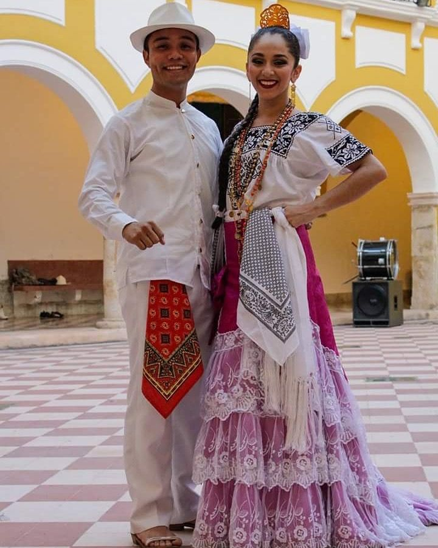

Los trajes típicos campechanos son una de las expresiones culturales más representativas de Campeche. Reflejan la mezcla entre las tradiciones indígenas mayas, la influencia española colonial y la vida festiva del estado, especialmente durante las celebraciones populares y las vaquerías.
El traje típico de Campeche surgió durante la época colonial. Su origen está relacionado con las festividades religiosas y civiles que organizaban los españoles en las haciendas y pueblos de la península de Yucatán. Las mujeres indígenas adaptaron prendas europeas a sus técnicas y gustos locales, incorporando bordados coloridos y telas ligeras adecuadas para el clima cálido.
Con el tiempo, el traje se convirtió en símbolo de identidad regional y empezó a utilizarse en bailes tradicionales como la jarana campechana y en fiestas populares.
El traje representa:
Los colores vivos y los adornos reflejan la naturaleza tropical y el ambiente festivo de la región.
Generalmente blanca, con bordados de flores de colores en el cuello y mangas. Los diseños suelen hacerse a mano.
De colores intensos como rojo, rosa, azul o amarillo. Puede llevar encajes y listones blancos.
Accesorio tradicional que se coloca sobre los hombros.
El cabello se recoge en un moño adornado con peinetas, flores y listones.
Se usan collares, aretes y rosarios de oro, influencia heredada de la tradición española.
Zapatos negros o blancos de tacón bajo, adecuados para bailar jarana.
De tela ligera y fresca.
Con mangas largas o tipo filipina.
Se coloca en el cuello como distintivo tradicional.
Usualmente de jipijapa o palma.
Complementan el atuendo tradicional utilizado en bailes y fiestas.
Actualmente, el traje campechano se utiliza en:
Es un símbolo vivo de la herencia cultural de Campeche y una forma de conservar las tradiciones del sureste mexicano.